Model
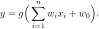
- hard limiter (step):
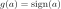
— the perceptron; - linear:
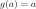
; - logistic sigmoid:
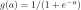
,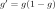
; - hyperbolic tangent:
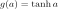
; - ReLU: , the default in deep networks.
The weights are the network's memory: learning means adapting them.
Machine learning
A learning system maps a data space into a decision space; it works in a training phase (estimate the function from examples) and a test phase (apply it). Training can be supervised (input–label pairs), unsupervised (no labels, the network organises the data), or hybrid. Compared with a von Neumann computer, biological networks are massively parallel, distributed, adaptive, fault tolerant and energy-efficient; computers are fast at numerical computation over large data — neural networks borrow the former's organisation and run on the latter.
Picture
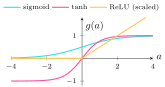
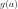
of an artificial neuron: sigmoid, hyperbolic tangent and (scaled) rectified linear unit.Worked example
Inputs
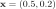
, weights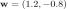
, bias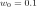
: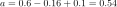
. Outputs: step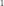
, sigmoid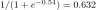
, tanh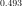
, ReLU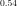
. The sigmoid derivative there is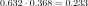
: a weight update by backpropagation is scaled by it.Intuition
A neuron is a soft vote: it sums weighted evidence and answers more or less strongly depending on how much the sum exceeds its threshold.
Pitfall
A single neuron is still a linear classifier with a nonlinear output; non-linear boundaries need layers of them.